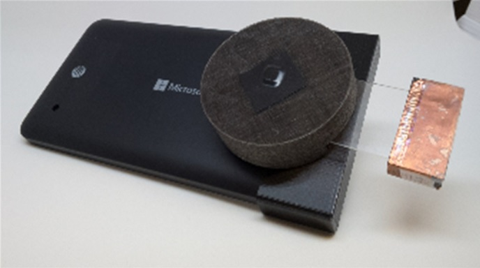

DIY Fluorescence Smartphone Microscopy

We've covered several portable microscopy setups before, including Foldscope, wooden scope, and our favorite these little UV magnifiers. We like the latter so much because it is capable of both white light, and UV light, and we found we were capable of doing a little bit of fluorescence microscopy on it.
That's where a 2017 paper by Yulung Sung, Fernando Campa, and Wei-Chuan Shih comes in, what if you need a portable fluorescence microscopy setup?
The paper entails a 3D printed housing for consisting of: a phone adapter, a light blocking ring with a slot for a color filter, a focusing ring, a threaded barrel with slits for the insertion of a sample glass slide, a lid to block ambient light, and housing for an LED and batteries. You can find the STL files for 3D printing these components yourself in the supplementary methods. They use 5050 Epistar LEDs of various wavelengths and long-pass color filters from Edmund Optics.
The least documented part of the project are the high-res and low-res PDMS based inkjet-printed polymer lenses. Some of these papers and lens fabrication techniques will probably be the subject of future articles.
Do you know of other portable fluorescence microscopy setups. DIY or commercial? Let us know!